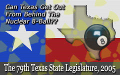

|  |
After the 79th Session of the Texas State Legislature drew to a close, this section was restructured to make things easier to read. The previous layout of all of the latest news and issues was on one page, the main topics were been given thier own pages to ease. There are more changes to come but may take time. (I have a day job). Things have also been slow on the waste issue, but not on the issues of Andrews County! See the first item below for what I'm talking about.
Also- don't forget that there is now a 2MB text archive of newspaper and media coverage related to nuclear issues, available here. It goes back to the mid-1990s, and usually lists to the current week. Our factsheets in english and spanish are now located at the bottom of this page below the news items. Our latest factsheet regarding WCS and LES is available here
Even More Sites Proposed in Andrews County- Experimental HTGC Reactor
A high temperature gas-cooled reactor (HTGR) is proposed by UT System and General Atomics for siting in Andrews to open in 2012. As if Andrews County wasn't getting nuked enough already. I haven't summarized in yet, but here are 3 articles about it. The most recent type of HTGC reactor to be tested is the Pebble Bed Modular reactor, pushed by the commercial reactor operator Exelon in the US. The most famous recent PBMR siting attempt has been in South Africa. The second and third links have info on the shortfalls of these technologies.
-- Read more: Articles from Midland, Odessa, and UT Austin papers.
-- Read more at IEER - Information on HTGC and Pebble Bed Modular reactors (PBMR).
-- Read more at NIRS - Information on HTGC and Pebble Bed Modular reactors (PBMR).
WCS Fernald Waste Storage Proceeding, SOAH Hearings DONE - State gifts WCS AGAIN
On December 16 2005, the State Office of Administrative Hearings (SOAH) concluded with a ruling: WCS will not bear scrutiny upon this license amendment. In the ruling my testimony was truncated - I discussed Monahans and Monument Draw, the Pecos River as well. This was generally ignored from the record by the judge who signed for both judges on the document. The only meaningful comment I seemingly had when looking at thier decision was that I said the Colorado was "just north" of the facility. I actually said Monument Draw was to the north and west of the site. One branch goes to the Colorado, the other goes down to Monahan's water supply tank. I never thought that I would get status of affected person, since I don't fall under the legal definition. I did hope that the judges would acknowlegde my main point about the previous ruling WCS mentioned, (see last paragraph in this block)- and not simply dismiss all contesting testimony. As in 1997, radiological pathways were portrayed as hypothetical scenarios and not taken under serious consideration. Here is some history that I will truncate it later.
Since Sept 1st, SOAH has continued the case of whether WCS should have been issued license amendment 32 to expand their storage space to 1.5 million cubic feet, in order to accommodate the 11(e)(2) waste that has been arriving from Fernald, Ohio. WCS is already storing some of this waste as it began arriving in early June. Oddly enough, State law actually tells the Department of State Health Services to grant approval prior to any hearing on the issue, which is to occur 30 days after the amendment has been granted. The meeting was originally scheduled as such on July 11, 2005. Lawyers from WCS and the major requestor for the contested case hearing (Sierra Club) agreed to postpone the meeting due to issues regarding the notice for the meeting itself, and on Sept 1st proceedings were finally underway.
Attempting to set a precedent for the meeting, WCS beforehand presented to the court and all parties a previous SOAH ruling from when it became licensed to store radioactive materials. The 1997 decision dismissed all requests for contesting the licensing based solely upon the testimony of expert testimony that WCS flew in. At that time, the opposing parties were individuals and organizations without resources for presentation or defense by lawyers and experts. WCS was again attempting to simply quash any critical opposition by getting the Judges to deny anyone the status of "affected person." Under the statute, an "affected person" is only eligible if living within the host County (or adjacent), and can demonstrate that "he/she suffered or will suffer actual injury or economic damage." Once all potential "affected persons" are eliminated, the hearings end, and WCS again escapes scrutiny. The previous ruling caved in to the standard nuclear industry explanations to dismiss County residents raising issues from geology to transportation of waste. Particularly at question continues the "will the person suffer injury" issue. In 1997, radiological pathways were portrayed as hypothetical scenarios and not taken under serious consideration in the final decision.
The 79th Legislature's Special Sessions and Waste Legislation
Sen. Duncans bill during the Regular Session (SB1667, see below for details) was quickly reintroduced for the first Special Session as SB39, and was scheduled for the Senate Committee on Natural Resources meeting on Monday, June 27th, but then never got further. For the second Special Session, Rep. Bonnen first introduced a House version as HB26 on July 25th. At first Sen. Duncan unsuccessfully attempted to attach the bill to judicial pay-raise legislation, and then finally introduced the bill as SB40 on August 9. The bill hit the Senate Floor and passed the very same day it was submitted, so in less than 24 hours it had been filed, voted, passed, and delivered to the House by morning.
Overall, what it does with waste is alright. Check out the Regular Session summary below for our analysis of this legislation during the Regular Session. Unfortunately, the most controversial part of this legislation remains, in the changes it slips into the Water Code which have more to do with uranium mining than of waste disposal [specifically, "Sec. 27.023 Authorization for Area-Wide In-Situ Mining of Radioactive Substances," Texas Water Code]. Section 36 of Sen. Duncans bill allows companies with permits for injection wells to begin uranium mining without a public hearing or any further approval from the State whatsoever. It even says a contested case hearing is forbidden. I know Sen. Duncan invited uranium mining companies from Texas and elsewhere to Austin during the Regular Session, and am pretty sure he didn't invite people like the folks from Kleberg County who are being told by the EPA not to drink the water due to uranium contamination (see below). Why is Duncan doing this? Is it a gift for companies like URI in Kleberg? It sure walks and talks like one. Will he reconsider this prior to the 80th Legislative Session?
Here's more info on SB39 at the Capitol's Website (now historical)
Here's more info on HB26 at the Capitol's Website (also now historical)
Here's more info on SB40 at the Capitol's Website (currently pending passage by House)
The 79th Texas State Legislature: Ideas, but little action
This session, there were a number of bills, none of which succeeded in passing, that had to do with waste and mining. Rep. Villareal's HB1656 attempted to address the infamous loophole in the Texas Compact law by expressly limiting waste imports to Compact member States. Rep. Gallegos presented HCR85, a concurrent resolution calling for an interim panel (appointed by the Speaker and Lt. Governor) to study the implications of importing radioactive waste as mandated by the previous session, and the issues which have arisen since that order was considered and signed into law. Both of these bills were not allowed passed thier House Committees to be considered on the House Floor.
Sen. Duncan procured SB1667, which would have moved agency supervision of radioactive waste processing, storage and disposal all under the TCEQ, and added revenue generation to a part of the Texas Code which went somewhat overlooked during the last session regarding uranium byproduct, which incidentally WCS has been ramming through to import to thier Andrews facility. This bill was passed the Senate, and then died in the House. It was a good bill, although we recommended that the revenue be used ater versions of this bill added a provision which limited public participation in uranium mine licensing. Meanwhile, Rep. "Buddy" West's HB2982 (which never made it to the House floor), pretty much ignored Sen. Duncan's efforts to consolidate regulation to the TCEQ, and attempted to give oversight of uranium mining operations to the non-nuclear Railroad Commission. There is discussion about a Special Session being announced, so it is possible that Sen. Duncan's bill will return then.
Read more: The 79th Legislature: Wrapup
Review: The 78th Texas State Legislature: Nuking Texas with Waste Imports
In 2003, the Texas State Legislature considered a bill which it had been presented with in several different forms for many years, and finally signed it into law. Just like previous versions, HB1567 (aka SB824) was largely written by a group of extremely highly paid lobbyists for the waste disposal industry, specifically a company in Andrews County called Waste Control Specialists LLC (WCS). The company had accomplished this through years of pouring millions of dollars in campaign contributions and soft-money contributions to state legislators. Sen. Bivins authored the Senate version with Sen. Duncan and sponsored the prevailing House version of this bill (incidentally, Pres. Bush has since granted Bivins the role of Ambassador to Sweden). Rep. "Buddy" West authored the House version with Reps Chisum and Smith.
This law mandates that rather than merely open a waste dump for The Texas Compact, that a private company (WCS) would be allowed to open the Compact dump and a second huge one about 100-times larger for waste from the Department of Energy, which is waste from our nations many legacy nuclear weapons factories from the Cold War. This law has opened the door for Texas to become "the radioactive waste disposal state of first and last resort." (quote from Sen. Duncan regarding later activities during the 79th Legislative Session).
The DOE dump has been slated to have a capacity of 281 million cubic feet, and is to open along with the Compact dump in 2008 by the TCEQ's current schedule. Since the Barnwell site in S. Carolina will be closing in 2008, Texas will be the only existing dump to take the nations waste. It also says that when the company closes the dump and leaves with the profits, the contaminated site will belong to Texas taxpayers in perpetuity. Although it takes billions of dollars to maintain and clean up these sites after closure, the company is only required to place a comparatively miniscule amount into a cleanup fund. Click below for more on the 78th Session, the staggering implications of this bill, its timetable, and other related information.
Read more: Review: The 78th Legislature's Mandated Dumps + Timeline of Licensing Events
Uranium Mining Coming back
There was some activity on mining during the 79th Session, but none of the bills passed that had been proposed. Rep. "Buddy" West's bill this Session to deregulate mining by giving oversight to the non-nuclear Railroad Commission. Also mentioned was the committee amendment that got attached to Sen. Duncan's mostly-otherwise good bill, an amendment which restricts public participation in the licensing process for uranium mines. Several companies with interests in uranium mining have been lobbying this session, primarily encouraged by the Bush Administration's renewed nuclear energy program, its push for opening new plants (as well as grandfathering old ones), and the fuel that will be required to power these plants. Opponents of further mining have refered to the long well-documented history and legacy pollution of uranium mining in Texas, in the 18 counties in which these activities have occurred.
In October 2004, residents of rural Kleberg County near Kingsville were notified by the EPA that uranium and radiation levels as high as eight times the federal safety standards had been detected in the water wells, and to not drink the water. The mining company URI is currently attempting to reopen two sites and start a new injection well in the county, and claiming the area pollution as naturally present. Hearings on the issue are to continue through early August.
Read more: "Uranium Mining Coming Back"
National Uranium Enrichment Facility = Waste to WCS
For some time, Louisiana Energy Services (LES) has been pushing to become licensed to operate the new National Enrichment Facility right accross the border from WCS. Along with this site would be a "deconversion" plant to prepare the waste for disposal. So far, the Texas dump has been assumed to take the waste from the facility for disposal, and now it appears LES is considering placing the deconversion facility in Texas as well, probably at the WCS site. Due to all of the changes since last session, such as LES and Nebraska's waste, Rep. Gallego filed a resolution calling for a joint committee to study these issues and report to the next legislative session in 2007, but it did not pass this Session.
Read more: "National Uranium Enrichment Facility = Waste to WCS"
The Texas Compact
On February 28 2005, Rep. Mike Villarreal [D-San Antonio] submitted House Bill 1656, which attempted to add a requirement that Texas radioactive waste disposal be limited to the compact member State of Vermont. This bill did not pass. Last year, Nebraska began seriously considering sending waste to Texas from the States in the Central Compact (Louisiana, Arkansas, Oklahoma, Kansas, and Nebraska). This proposal is still on the table, and Nebraska now has an additional incentive: relief on paying $11 million in its settlement if it can get Texas to take the waste. Now at the end of the Session, other states are now attempting to send rubble from decommissioned power plants to WCS as "exempted waste" to go into their HazMat hole in the ground.
Read more: "The Texas Compact: More States Already Trying to Bring Waste In"
WCS and 11(e)(2) Waste from Fernald, Ohio
In 2003, the Dept. of Energy's Fernald Plant began looking for a disposal site for 3 silos of uranium tailings which are categorized under Section 11(e)(2) of the Atomic Energy Act. Two of these silos contain unusually radioactive wastes that are as hot as Class C waste. For this reason, other sites in the US have declined to accept the waste, but WCS sure didn't. WCS applied to both extend its storage license and obtain a license for a third dump for this type of material. Texas Senators have asked for consideration of any 11(e)(2) licensing to be postponed until after they have investigated the implications of the issue. All the while, WCS protested- not only pretending that there is no application to dispose being processed, but saying delay in granting their licensing aims has "no basis in law" and "could cause irreparable harm to WCS." Traditional behavior from WCS exhibited yet again. WCS got TDSHS to give them their license amendment anyway, Sen. Duncan submitted a bill (SB1667) that had some promising ideas, including transferring regulatory authority over processing and storing radioactive waste from the historically lax TDSHS over to the TCEQ. The bill did not make it through the session. Beginning in June 2005, shipments began. The Sierra Club had filed a contested case hearing which has now finally been scheduled for July 11, 2005 (the law in this area only allows for public participation after granting the company's licensing request... a little, well, wierd. Sen Duncan's bill would have corrected this). There is information at the top of this page regarding the hearing and its location.
Read more: "WCS and 11(e)(2) Waste from Fernald"
Nuclear Weapons and Texas [Pantex, Los Alamos, and more]
There has been a campaign to address Los Alamos National Labs as UT System has been considering a very expensive bid to manage the DOE lab, where the first nuclear weapons were developed and where nuclear weapons research and production continues to this day. It could be said that this is a conflict of interest, as plutonium runoff from Los Alamos has polluted the Rio Grande and Pecos rivers for decades since the 1940's, pollution that has increased as much as a hundredfold after the fires several years ago. It now appears that the bid for Los Alamos may be fading, but another bid is arriving with Sandia. You can find out more about this material by visiting UTNukeFree.org. We also want to congratulate students in the group UTWatch for taking on the nuclear subject.
For some time, Texas has been home to the primary nuclear weapons factory in the United States, which assembles all of the U.S. stockpile out of the parts sent from the other factories (final assembly). Since the end of the Cold War, the site called Pantex has instead decommissioned some older nuclear weapons and currently stores over 60 tons of plutonium onsite from these activities. In the 1990s, low-yield bunker-buster nukes started being manufactured at Pantex, and with the latest Bush Administration, new plans are to revitalize the U.S. stockpile of thermonuclear weapons, placing Pantex back into production mode as during the Cold War. This is not the end though- Pantex is seen as a prime location for placing a new "Modern Pit Facility," which would manufacture plutonium pits, taking over the previous role of Rocky Flats, one of the most polluted sites of the weapons complex (a plutonium pit is the fissionable core of thermonuclear warheads) . The WIPP site in New Mexico is also a candidate for housing the Modern Pit Facility.
Factsheets
Here are two items that we have been using as fliers. They are somewhat dated, yet contain all of the basic information and background on the nuclear waste issue in Andrews County, the Ogalalla aquifer, and other related issues.
 Andrews Overview Info Sheet [1.5MB PDF]- just the basics - 2 pgs (1 pg if 2-sided)
Andrews Overview Info Sheet [1.5MB PDF]- just the basics - 2 pgs (1 pg if 2-sided)Back in July 2003, The Nuclear Monitor, published by WISE/NIRS to an international audience, printed our article about whats going on here in Texas. The entire newsletter is available at NIRS.
This item is available in english [1.3M PDF], and
in spanish [1.47M PDF]